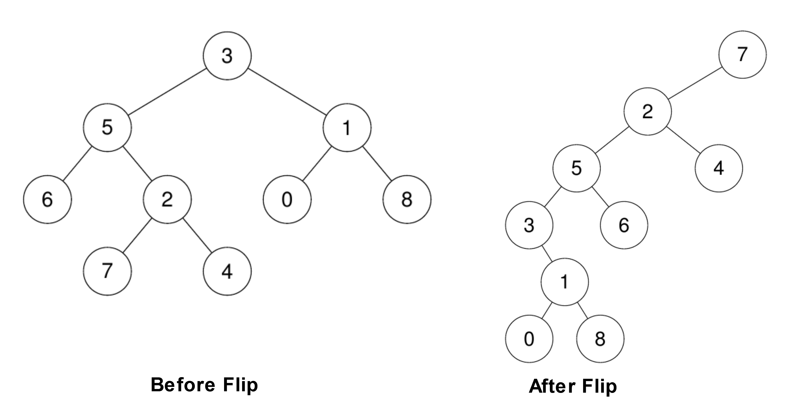

| Category | Difficulty | Likes | Dislikes |
|---|---|---|---|
| Algorithms | Medium | 69 | 198 |
google
Given the root of a binary tree and a leaf node, reroot the tree so that the leaf is the new root.
You can reroot the tree with the following steps for each node cur on the path starting from the leaf up to the root excluding the root:
cur has a left child, then that child becomes cur's right child.cur's original parent becomes cur's left child. Note that in this process the original parent's pointer to cur becomes null, making it have at most one child.Return the new root of the rerooted tree.
Note: Ensure that your solution sets the Node.parent pointers correctly after rerooting or you will receive "Wrong Answer".
Example 1:

Input: root = [3,5,1,6,2,0,8,null,null,7,4], leaf = 7
Output: [7,2,null,5,4,3,6,null,null,null,1,null,null,0,8]Example 2:
Input: root = [3,5,1,6,2,0,8,null,null,7,4], leaf = 0
Output: [0,1,null,3,8,5,null,null,null,6,2,null,null,7,4]
Constraints:
[2, 100].-109 <= Node.val <= 109Node.val are unique.leaf exist in the tree.